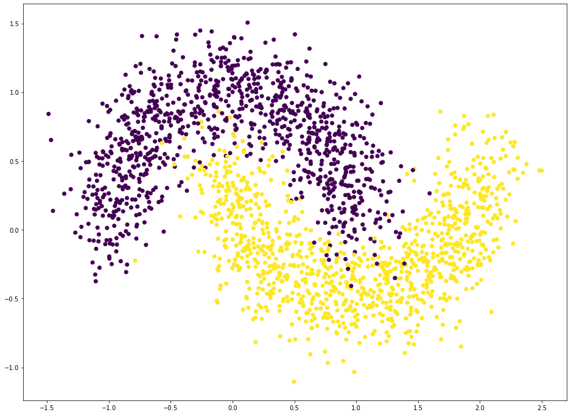

说明
我们将实现一个 4 层的全连接网络，来完成二分类任务。 网络输入节点数为 2，隐藏
层的节点数设计为： 25、 50和25，输出层两个节点，分别表示属于类别 1 的概率和类别 2
的概率，如下图所示

生成数据
1
2
| from sklearn.datasets import make_moons
from sklearn.model_selection import train_test_split
|
1
2
3
| N=2000
test_size=0.3
X,y=make_moons(n_samples=N,noise=0.2,random_state=100)
|
划分训练集和测试集
1
| X_train,X_test,y_train,y_test=train_test_split(X,y,test_size=test_size,random_state=42)
|
(2000, 2) (2000,)
数据可视化
1
2
3
4
| import matplotlib.pyplot as plt
plt.figure(figsize=(16,12))
plt.scatter(X[:,0],X[:,1],c=y.ravel())
plt.show()
|

网络层
1
2
3
4
5
6
7
8
9
10
11
12
13
14
15
16
17
18
19
20
21
22
23
24
25
26
27
28
29
30
31
32
33
34
35
36
37
38
39
40
41
42
| class Layer:
def __init__(self,n_input,n_neurons,activation=None,weights=None,bias=None):
self.weights=weights if weights is not None else np.random.randn(n_input,n_neurons)*np.sqrt(1/n_neurons)
self.bias=bias if bias is not None else np.random.rand(n_neurons)*0.1
self.activation=activation
self.last_activation=None
self.error=None
self.delta=None
def activate(self,x):
r=np.dot(x,self.weights)+self.bias
self.last_activation=self._apply_activation(r)
return self.last_activation
def _apply_activation(self,r):
if self.activation is None:
return r
elif self.activation=='relu':
return np.maximum(r,0)
elif self.activation=='tanh':
return np.tanh(r)
elif self.activation=='sigmoid':
return 1/(1+np.exp(-r))
return r
def apply_activation_derivative(self,r):
if self.activation is None:
return np.ones_like(r)
elif self.activation =='relu':
grad=np.array(r,copy=True)
grad[r>0]=1.
grad[r<0]=0
return grad
elif self.activation =='tanh':
return 1-r**2
elif self.activation =='sigmoid':
return r*(1-r)
return r
|
网络模型
1
2
3
4
5
6
7
8
9
10
11
12
13
14
15
16
17
18
19
20
21
22
23
24
25
26
27
28
29
30
31
32
33
34
35
36
37
38
39
40
41
42
43
44
45
46
47
48
49
50
51
52
53
54
55
56
57
58
59
60
61
| class NeuralNetwork:
def __init__(self):
self._layers=[]
def add_layer(self,layer):
self._layers.append(layer)
def feed_forward(self,X):
for layer in self._layers:
X=layer.activate(X)
return X
def backpropagation(self,X,y,lr):
output=self.feed_forward(X)
for i in reversed(range(len(self._layers))):
layer=self._layers[i]
if layer==self._layers[-1]:
layer.error=y-output
layer.delta=layer.error*layer.apply_activation_derivative(output)
else:
next_layer=self._layers[i+1]
layer.error=np.dot(next_layer.weights,next_layer.delta)
layer.delta=layer.error*layer.apply_activation_derivative(layer.last_activation)
for i in range(len(self._layers)):
layer=self._layers[i]
o_i=np.atleast_2d(X if i==0 else self._layers[i-1].last_activation)
layer.weights+=lr*layer.delta*o_i.T
def train(self,X_train,X_test,y_train,y_test,lr,max_epochs):
y_onehot=np.zeros((y_train.shape[0],2))
y_onehot[np.arange(y_train.shape[0]),y_train]=1
mses=[]
for i in range(max_epochs):
for j in range(len(X_train)):
self.backpropagation(X_train[j],y_onehot[j],lr)
if i%10==0:
mse=np.mean(np.square(y_onehot-self.feed_forward(X_train)))
mses.append(mse)
print('Epoch:#%s:%f'%(i,float(mse)))
return mses
|
创建网络对象，添加4层全连接层
1
2
3
4
5
| nn=NeuralNetwork()
nn.add_layer(Layer(2,25,'sigmoid'))
nn.add_layer(Layer(25,50,'sigmoid'))
nn.add_layer(Layer(50,25,'sigmoid'))
nn.add_layer(Layer(25,2,'sigmoid'))
|
训练模型
1
| mses=nn.train(X_train,X_test,y_train,y_test,0.3,100)
|
Epoch:#0:0.101804
Epoch:#10:0.100500
Epoch:#20:0.096917
Epoch:#30:0.095081
Epoch:#40:0.093955
Epoch:#50:0.093544
Epoch:#60:0.093765
Epoch:#70:0.075405
Epoch:#80:0.043148
Epoch:#90:0.027516
可视化loss与epoch的关系
1
2
3
| plt.plot([i for i in range(10)],mses)
plt.xlabel('epochs')
plt.ylabel('loss')
|